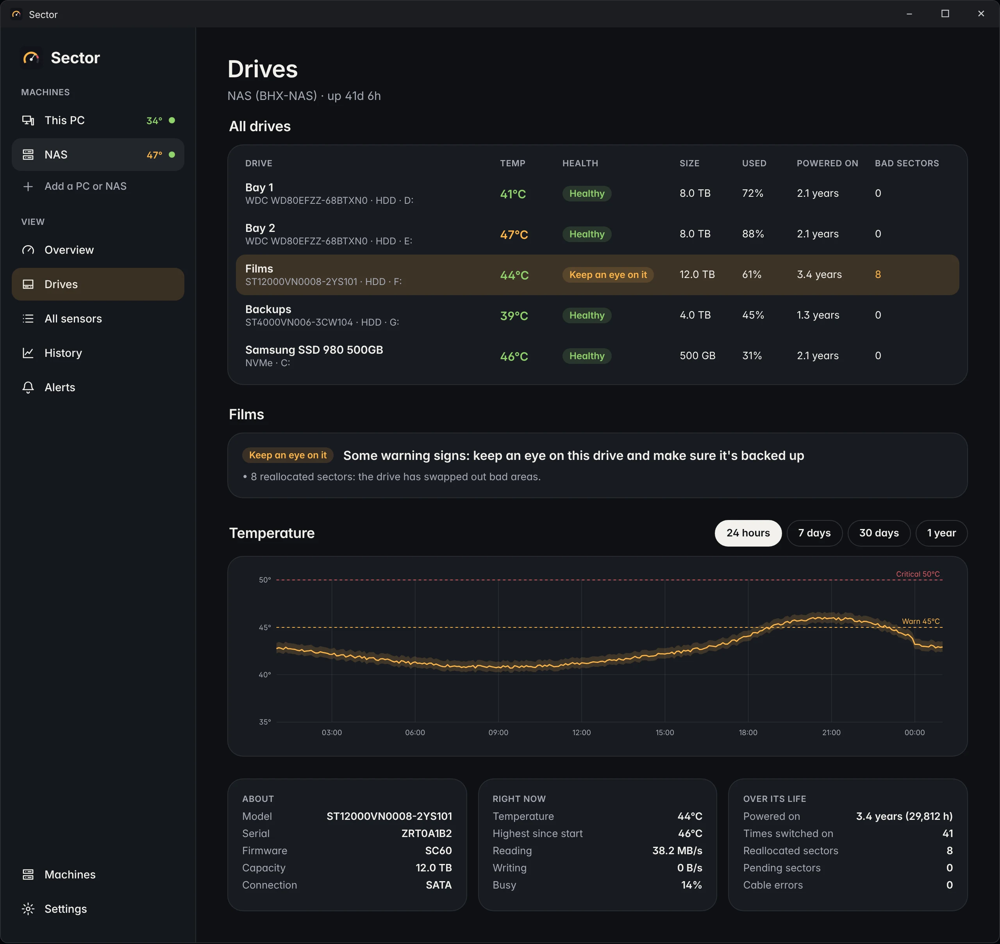
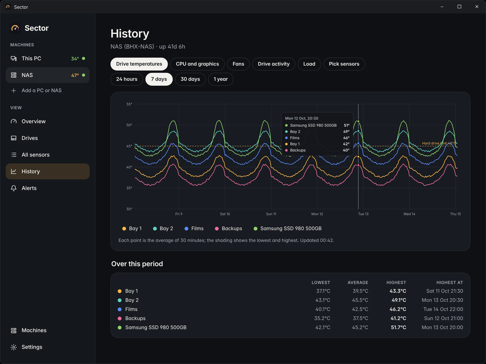
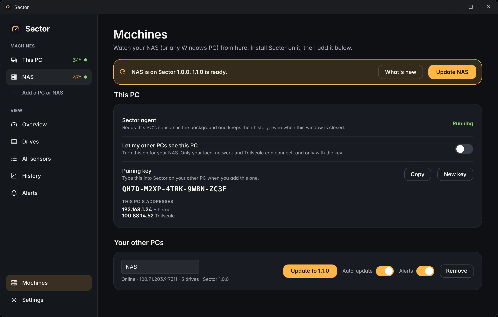
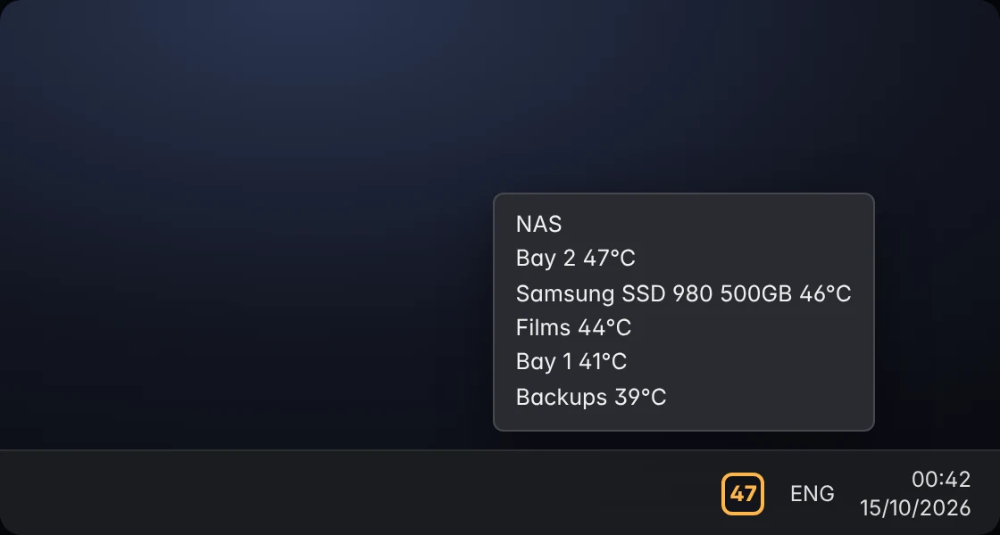

Everything your hardware reports.
Said simply.
Sector reads the same sensors as the best monitoring tools, keeps the history for you, and tells you what the numbers mean.
Drive temperatures and health
Every hard drive and SSD: live temperature, bad and unstable sectors, cable errors, power-on time and data written, with a verdict you can act on.
CPU, graphics and motherboard
Package and core temperatures, clocks, load and power, the graphics card, and every sensor on the motherboard, including the VRMs.
Every fan
Speeds in RPM for every fan the motherboard can see, with how hard each is being driven. Optional alert if one stops.
A year of history
A background service records around the clock, even when nobody's signed in. Chart an hour or a year and see the peak and when it happened.
Alerts that make sense
Hot drives, CPUs and graphics cards, new bad sectors, stopped fans and PCs that go offline. Your limits, per drive if you like.
All your PCs in one window
Watch your NAS from your desk over your home network or Tailscale. Each PC shows its hottest drive right in the sidebar.
One window. Every number.
The whole machine at a glance
Open Sector and you see what matters first: how hot things are, and whether any drive needs attention.
- CPU, graphics and memory with their last 15 minutes
- A card per drive: temperature in green, amber or red against your limit
- Health, space used and power-on time on every card
- Every other temperature sensor and fan, grouped by part
Everything about every drive
A table of all your drives, and every detail of the one you pick. Health is explained in words, not just numbers.
- "Healthy", "Keep an eye on it" or "Back it up now", with the reasons
- Reallocated, pending and unreadable sectors, and cable errors
- Temperature for the last day, week, month or year
- Name your drives ("Bay 2", "Films") and give each its own limit
- The full SMART table when you want it

See the pattern, not just the moment
Is the NAS hot every evening? Did that new fan help? History answers in a glance.
- Every drive on one chart, with your limit marked
- CPU and graphics, fans, drive activity and load too
- Hover anywhere to read every line at that moment
- Lowest, average and highest for the period, and when the peak was

Your PC, your NAS, and anything else
Add any Windows PC running Sector with its address and a pairing key. Then update, alert on and watch it from here.
- This PC's sharing switch, pairing key and addresses
- Works over your home network and Tailscale
- Update another PC from your desk, or let it update itself
- Alerts on or off per PC

Watch every drive in your NAS
from your desk.
Install Sector on the NAS too. It records its own history around the clock, and your desktop warns you when a drive gets too warm.
Set up in a couple of minutes
- Install Sector on the NASTick "Let my other PCs see this PC's stats".
- Copy its pairing keyFrom Sector > Machines on the NAS.
- Add it on your desktopType its Tailscale name or IP and the key. Done.
The number that matters, by the clock
Sector puts your hottest NAS drive's temperature in the notification area. It turns amber at your limit and red when it's critical. Hover for every drive.
- Notifications when a drive, CPU or graphics card runs hot
- And when a drive's health gets worse or the NAS goes offline
- Reminders while it lasts, and a note when it clears

One click updates
every PC.
When a new version is out, Sector tells you once. Click Update all and the NAS and this PC both update themselves, then Sector reopens. No installer to run, and no Windows permission prompt.
Prefer not to click at all? Turn on automatic updates, per PC.
How hot is too hot?
Sector starts with these limits. Change them in Settings, or set one for each drive.
| Part | Warn | Critical | Why |
|---|---|---|---|
| Hard drives | 45°C | 50°C | Most are rated to 55 or 60°C but last longest below about 45°C. Months in the high 40s is a sign the drive cage needs more air. |
| SSDs and NVMe | 65°C | 75°C | They run warmer, and slow themselves down at around 70 to 80°C. |
| CPU | 85°C | 95°C | Modern CPUs boost right up to their limit, so short peaks under load are normal. |
| Graphics | 83°C | 90°C | Most cards slow down somewhere between 83 and 90°C. |
Up and running
in a minute.
- Download Sector-Setup.exeAnd double-click it. Windows asks for permission once, to set up the background service.
- Keep "Install PawnIO" tickedIt's the small signed driver for CPU temperatures and fan speeds. Drive temperatures work without it.
- On your NAS, also tick sharing"Let my other PCs see this PC's stats". Leave it off everywhere else.
Good to know
Is it safe to let my other PCs see the NAS?
Sharing only accepts connections from your local network and Tailscale addresses (the firewall rule is limited to those), every request needs the pairing key, and other PCs can only read. Settings can only be changed on the PC itself, and the only thing another PC can start is an update to the official release. Click New key to lock out any PC that has the old one.
Why does a drive say "No reading"?
It isn't sharing SMART data with Windows. That's common for drives in USB enclosures and behind RAID cards. Drives connected straight to the motherboard (SATA or NVMe) work best.
Why are CPU temperatures or fans missing?
They need the PawnIO driver. The installer offers it, and Sector shows a one-click install if it's missing. If fans still don't show, the motherboard may not report them, or they may be plugged into a hub or the power supply, which can't be read.
Does my NAS have to run Windows?
For now, yes. Sector's agent is a Windows service. Any Windows PC can be watched, whether it's a NAS, a home server or a gaming PC.
Does anything leave my network?
No readings or history ever leave your PCs. The only outside connection is to GitHub, to check for new versions of Sector.
Where's the history kept, and how do I remove Sector?
Each PC keeps its own history in C:\ProgramData\Sector. Uninstall from Windows Settings > Apps; it removes the service and the firewall rule, and asks whether to delete the history too.
Keep your drives cool.
Install Sector on your PC and your NAS. It's free and open source.